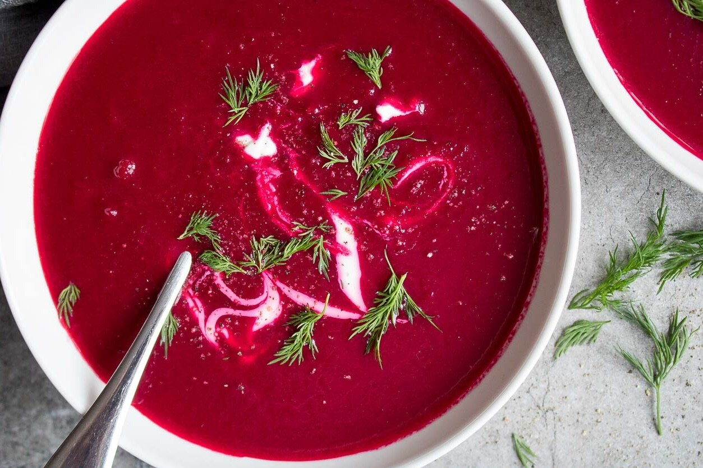

Traditional Ukrainian Recipes
Explore three classic Ukrainian dishes with simple ingredients and easy steps.

Borscht
Borscht is a traditional Ukrainian beet soup known for its rich color and flavor. It is often served with sour cream and bread.
Ingredients
- Beets
- Cabbage
- Potatoes
- Carrots
- Onion
- Beef or vegetable broth
- Sour cream
Steps
Cook vegetables in broth until soft. Add beets and cabbage, simmer, and serve hot with sour cream.
Varenyky
Varenyky are Ukrainian dumplings filled with potatoes, cheese, cabbage, or fruit.
Ingredients
- Flour
- Water
- Salt
- Potatoes
- Cheese or onion
- Butter
Steps
Make dough, add filling, seal, boil until they float, and serve with butter or sour cream.
Holubtsi
Holubtsi are stuffed cabbage rolls filled with rice, meat, and seasonings.
Ingredients
- Cabbage leaves
- Ground meat
- Rice
- Onion
- Tomato sauce
- Salt and pepper
Steps
Fill cabbage leaves, roll tightly, cover with sauce, and cook until tender.
Recipe Comparison Table
| Dish | Main Ingredient | Cooking Time |
|---|---|---|
| Borscht | Beets | 60–90 minutes |
| Varenyky | Potatoes / Cheese | 45–60 minutes |
| Holubtsi | Cabbage & Meat | 60–80 minutes |